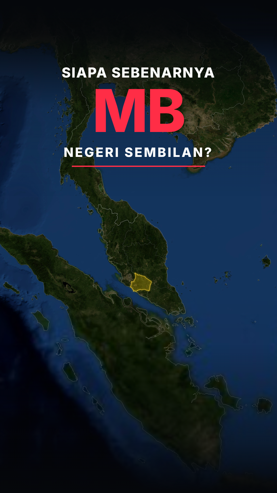
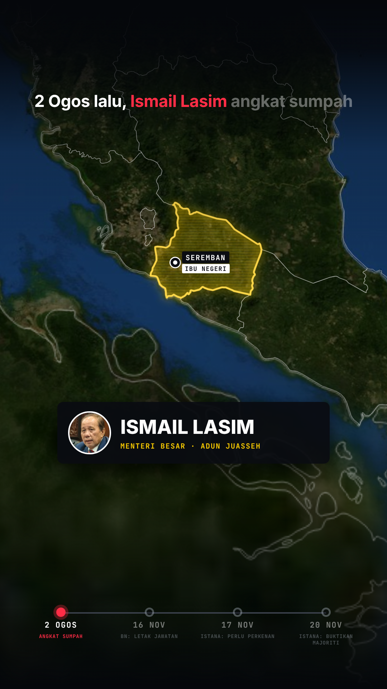
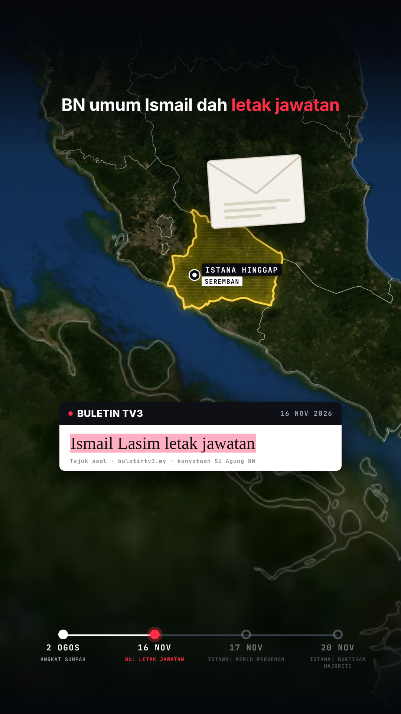
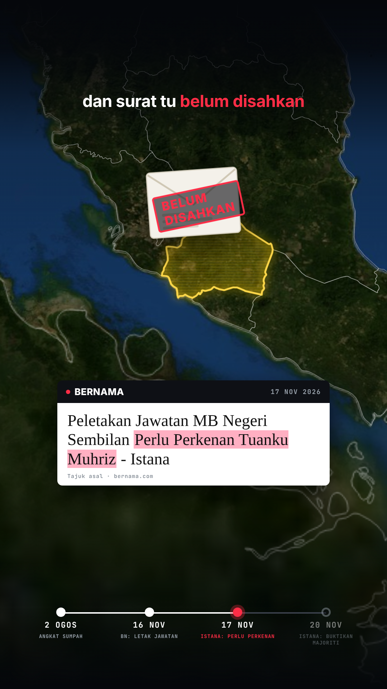
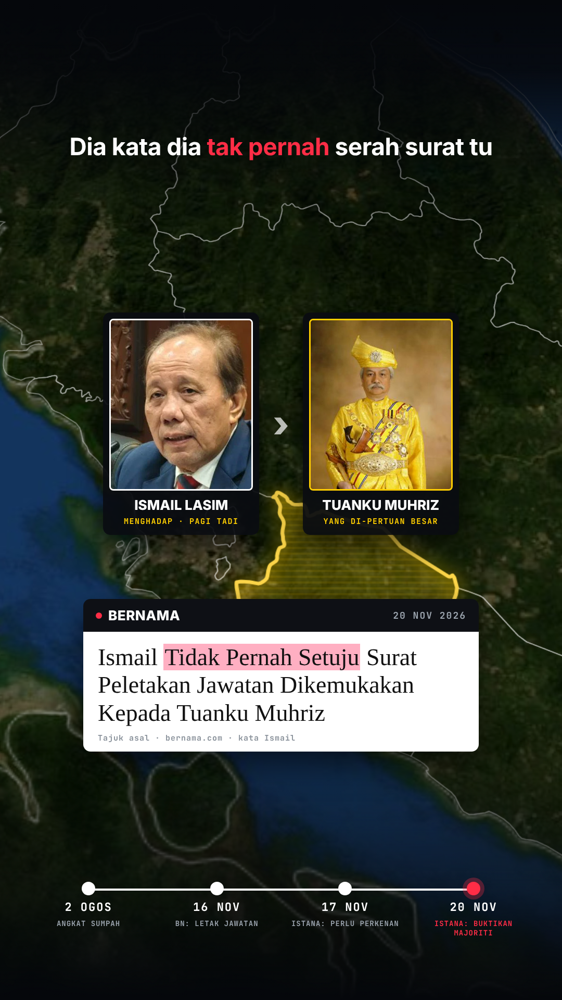
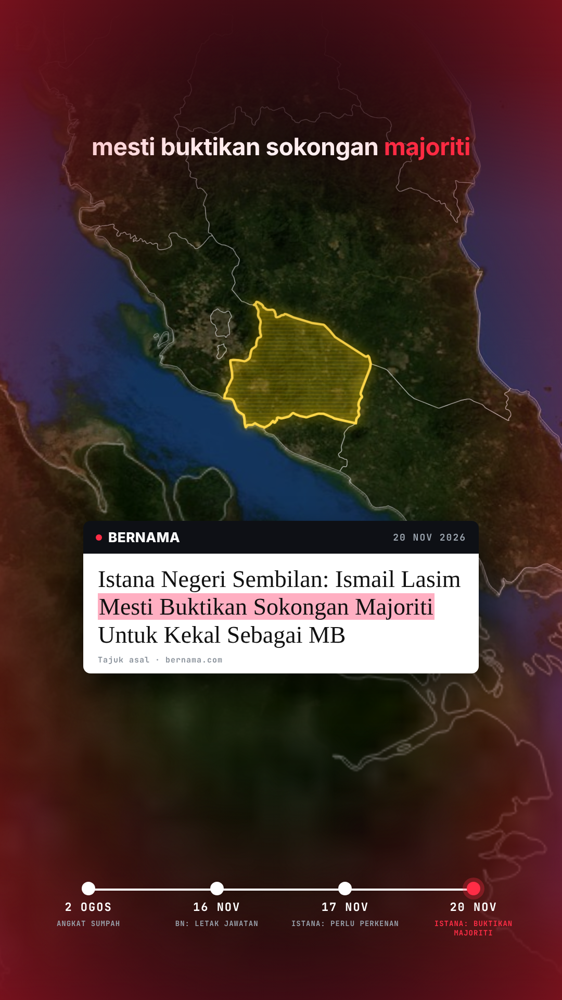
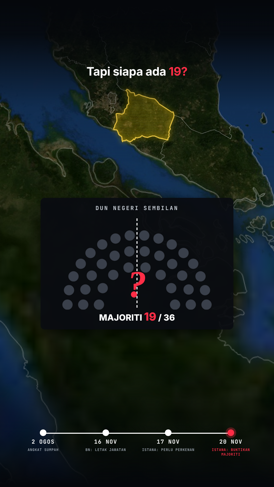
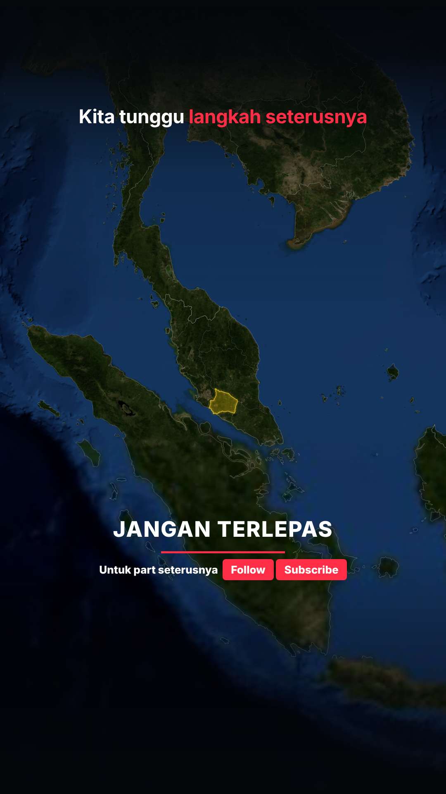

GAYA MAP ANIMATION (politik negeri) · 1080×1920 · ~54 s (VO 1.15×) · sempadan negeri Natural Earth · fakta: research/mb-negeri-sembilan-2026.md · gambar tokoh dari pengguna, tiada imej AI

01 · 0:00
Hook
"Siapa sebenarnya Menteri Besar Negeri Sembilan? Hari ni pun jawapannya belum jelas."
Glob terus junam ke Semenanjung, Negeri Sembilan menyala kuning. Tajuk SIAPA SEBENARNYA MB NEGERI SEMBILAN? slam masuk.

02 · 0:05
2 Ogos
"Ismail Lasim angkat sumpah sebagai Menteri Besar, selepas PRN."
Zoom ke N9, pin Seremban. Kad nama dengan gambar Ismail (dari kau). Garis masa di bawah: titik 2 OGOS menyala.
Carta 36 kerusi isi satu-satu ikut warna, garis putus-putus 19 = MAJORITI. Label: keputusan PRN 1 Ogos, bukan sokongan sekarang.

04 · 0:14
16 Nov
"BN umum Ismail dah letak jawatan, dan kata ada surat kepada Tuanku Muhriz."
Ikon surat (tiada tulisan boleh dibaca) melayang ke pin Istana Hinggap. Kad Buletin TV3 tajuk asal. Garis masa → 16 NOV.

05 · 0:19
17 Nov
"Istana jelaskan: letak jawatan hanya berkuat kuasa dengan perkenan Tuanku. Surat belum disahkan."
Cop BELUM DISAHKAN slam atas surat. Kad Bernama, highlight "Perlu Perkenan Tuanku Muhriz".

06 · 0:26
20 Nov, pagi
"Ismail menghadap Tuanku di Istana Hinggap. Dia kata tak pernah serah surat tu."
Zoom rapat Seremban, pin ISTANA HINGGAP · 20 NOV · PAGI. Dua potret: Ismail › Tuanku Muhriz (potret rasmi, bingkai emas, tanpa kesan/cop). Kad Bernama "kata Ismail".

07 · 0:33
Kenyataan Istana
"Istana tak minta Ismail kekal. Mesti buktikan sokongan majoriti dalam DUN."
Tint merah. Kad Bernama, highlight Mesti Buktikan Sokongan Majoriti. Garis masa penuh.

08 · 0:42
Siapa ada 19?
"DUN ada 36 kerusi. Majoriti 19. Soalannya bukan siapa betul, tapi siapa ada 19."
Kerusi jadi kelabu, ? merah besar di tengah, MAJORITI 19 / 36. Zoom punch.

09 · 0:49
Penutup
"Kita tunggu langkah seterusnya."
Tarik balik ke Semenanjung. Outro: JANGAN TERLEPAS + [Follow] [Subscribe].
Caption atas, perkataan demi perkataan · zoom punch pada kata kunci · garis masa tetap di bawah · setiap kenyataan disebut siapa cakap · satu shot kamera berterusan